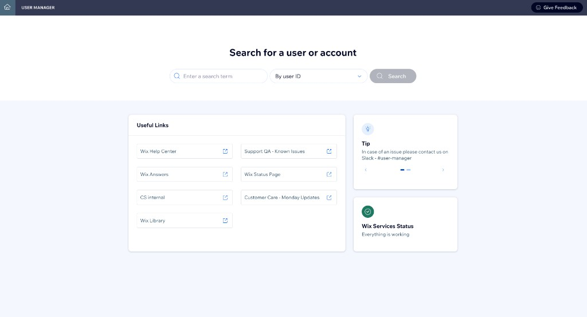

Branch A: B&W (Original CK) -- Agent designs + codes. Strict #000/#fff wireframes with working JS. Layout-focused review, no design system.

Branch B: Stitch Creative -- Stitch AI designs AND renders from loose prompts. Full WDS color, Stitch's own layout ideas. The AI proposes its interpretation of the User Manager landing page.
Branch C: Stitch Directed -- Agent designs the same concepts as B&W. Stitch renders them with full WDS color. Same layout ideas, dramatically different visual quality.
Legend:
A: B&W -- agent designs + codes
B: Creative -- Stitch designs + renders
C: Directed -- agent designs, Stitch renders
A vs C = renderer · A vs B = designer · B vs C = whose ideas